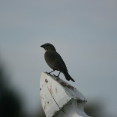

Wild NCC
A Field Guide for Northampton Community College
Home
Species Index
Guide Map
Locations
Contact
Search
NCC
Animals
Fungus
Lichens & Mosses
Plants
Pond Life
Black colored birds
home
»
Animals
»
Birds
» Black colored birds
Species in this category (4)
American robin

Brown Headed Cowbird
Crow
Red Winged Blackbird